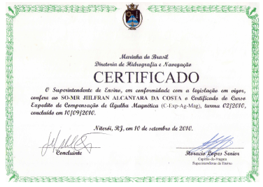
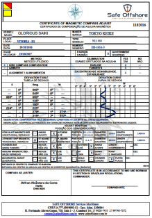
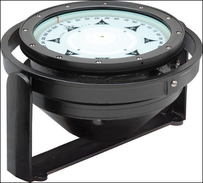

Serviços especializados em equipamentos de navegação náutica.
Todos os serviços seguem as normas da Marinha do Brasil e organismos internacionais de navegação.



Entre em contato e solicite um orçamento personalizado.